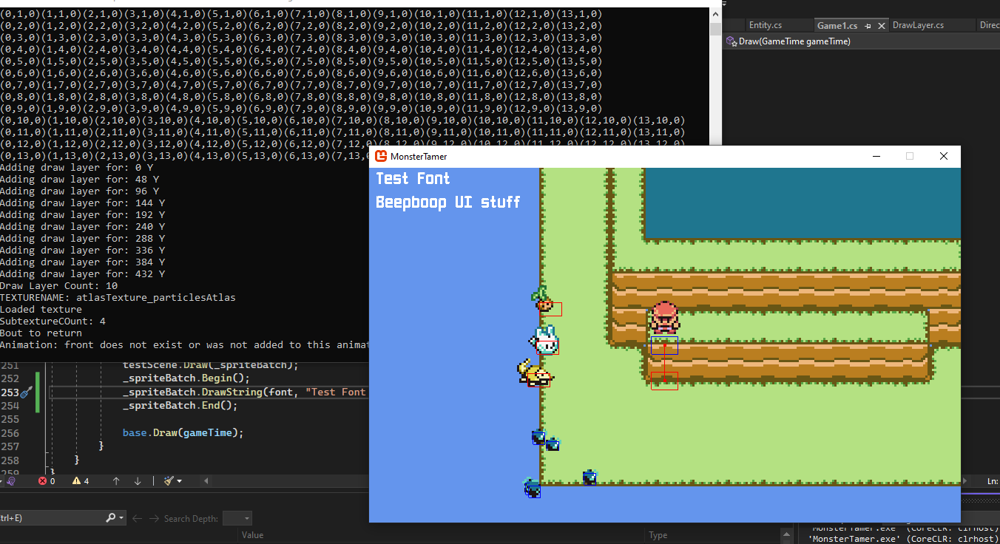
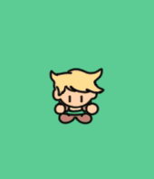

Welcome to the Monster Tamer game dev blog! I figured a first post explaining what the heck this even is would be in order. Thats precisely why I made a whole "About" page!! But I know that there is a good chance no one (including me) would check that first. And that is precisely why I made a whole "Initial Post" page!! Consider this to be the "About Page+".
A decent chunk of the early posts on this blog will be somewhat unusual since they will be completely retrospective. Obviously I have a whole chunk of work I've been doing on the project before deciding to make this little blog, so I'll have to play catch-up on posts describing some of the important fundamental parts of the project thus far. I don't know exactly how many that will entail since I haven't written them all yet, but I can estimate around 5-8? Most of these will be about bringing the blog up to speed on where the project is from a code standpoint so that future posts will have some amount of context to go off of. Additionally, the early posts will probably have less direct images and code examples since the code and the project as a whole has evolved quite a bit, and early temporary decisions have mostly been reworked in some way, but I'll try to include my thought-process from the time, and maybe even try to rummage up some exact examples from the sparce images and code I do have left from the project at that time.
With all that out of the way, enjoy the rest of the "About Page+" experience:
Bonus images?
Bam, you got those!
A GIF?
Yup thats right.
Some other third thing?
Ask and you shall recieve!
Anyway, welcome to the dev blog for my game project currently named "Monster Tamer". It's gonna be educational, it's gonna be rambly, its gonna be some other third thing. Hope you learn at least a little something, and enjoy seeing my project!